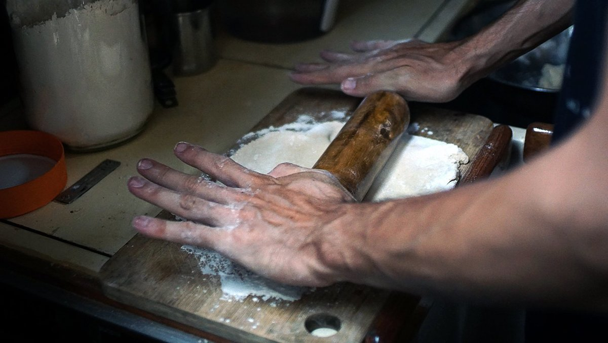
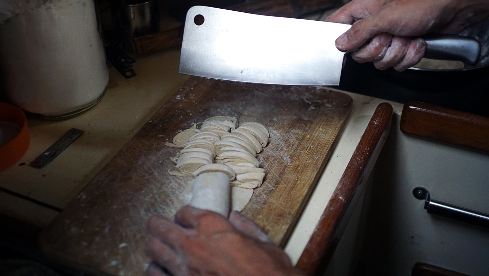
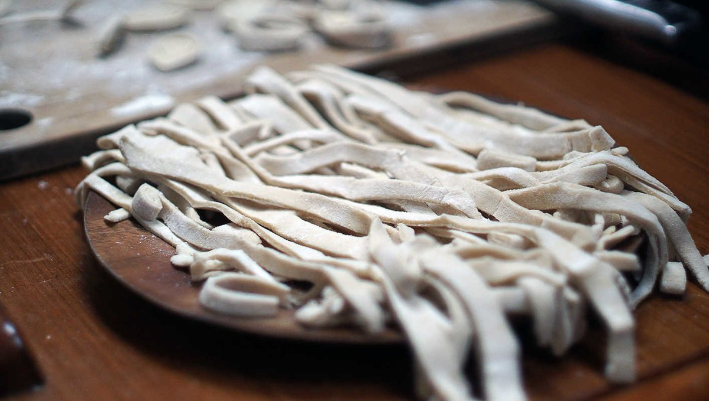

breadfruit pasta
4 people — 20 minutes
Yes, another breadfruit recipe! This fruit is one of the most versatile ingredients we've ever cooked with, it's cheap and pairs well with just about anything. When we returned to the south pacific last June, you can be sure that the first thing we went looking for at the market was this lovely green wonder. It's become a staple for us, a treat and food we are excited to cook and eat.
While in a grocery store in Fiji, we spotted breadfruit flour! A company called Friend's Fiji style sells it in bags of 300g. It's a good alternative if the fresh kind can't be found. It's something we'll stock up on when we leave, so we continue to have breadfruit in our diet (in some form).

Making pasta from scratch requires your hands, a knife and a rolling pin (or bottle, whatever works). Making pasta by hand that is even and thin is a challenge, it's easier to opt for thicker 'udon-style' noodles. Expert soba chefs in Japan can cut noodles thinly, but this requires experienced hands. We have a good blade, but lack the patience as well as the desire to cut even noodles. We're very okay with imperfect noodles.

Tricks for cutting pasta evenly: Roll the flattened piece of dough and cutting it cross-wise is the key, the details on how to do this are in the recipe instructions below.
If you come to Fiji and like to make pasta from scratch, try and find some breadfruit flour. That same company also produces cassava flour.

We like to eat breadfruit pasta with garlic, chilis and bitter melon, sauteed in olive oil with some shredded nori on top- simple, and tasty. Alternatively, to make regular pasta, just sub the breadfruit flour for 85 g of whole wheat flour or 75 g spelt flour.
 breadfruit flour80 g
breadfruit flour80 g all purpose flour90 g
all purpose flour90 g salt1.25 g
salt1.25 g water180 ml
water180 ml
breadfruit pasta
- In a large bowl, mix 90g (3/4 cup) of all purpose flour with 80g (3/4 cup) of breadfruit flour.
- Add 1.25 g (1/4 tsp) of salt, mix well.
- Add 180 ml (3/4 cup) of water, mix until it starts to clump up, then knead with your hands until you have a smooth dough. Let rest for 20 mins (this will make it easier to roll).
- Separate dough in two, put one half aside. Separating the dough makes it easier to roll if you have limited counter space (like I do).
- Sprinkle flour on your working surface, flatten the ball out from the center to the outer edge. Continue to roll, flipping the dough over once or twice and dusting it with flour to prevent it sticking. Roll to desired thickness.
- Fold the sheet of dough into a flat roll, then cut into it cross-wise into 0.5cm strips.
- Repeat all the steps for the other half of the dough.
- Carefully unroll each coil with your fingers, then transfer to a floured surface.
- Bring water to a boil. Add pasta. Cook for a minute or so, and serve with a light sauce!